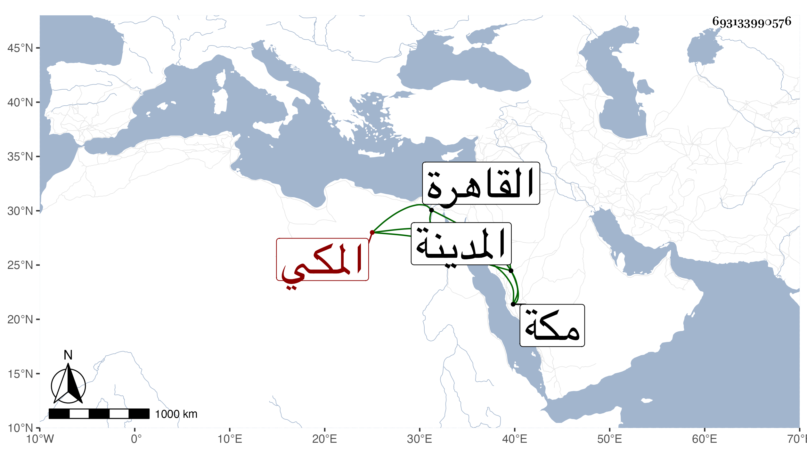

0902Sakhawi.DawLamic.ITO20230111-ara1.EIS1600.693133990576
Biography ID: 693133990576
351
أبو سعد بن عبد القادر بن علي بن زايد المكي أخو عبد اللطيف وابن عمة عبد الباسط وأبي الفتح الماضيين وسبط أخت أبي سعد الهاشمي ويعرف كسلفه بابن زائد ممن سمع مني بمكة ثم قدم القاهرة في رجب سنة اثنتين وتسعين وزار المدينة وهو ممن حفظ القرآن وأربعي النووي والشاطبية وعرض على البرهاني القاضي والنجم بن فهد وغيرهما .
